Page 9Phobos and Deimos
Mars has two tiny moons. Phobos races close to Mars, while smaller, smoother Deimos travels farther away.
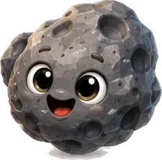
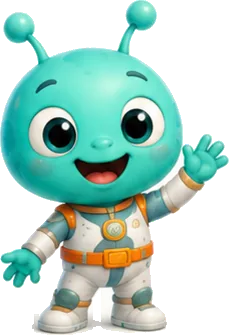
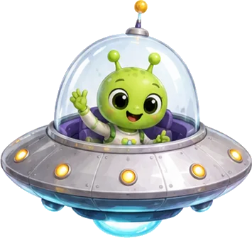
Tap a sparkling star on any page to meet a space friend and keep their sticker.
Mars has two tiny moons. Phobos races close to Mars, while smaller, smoother Deimos travels farther away.
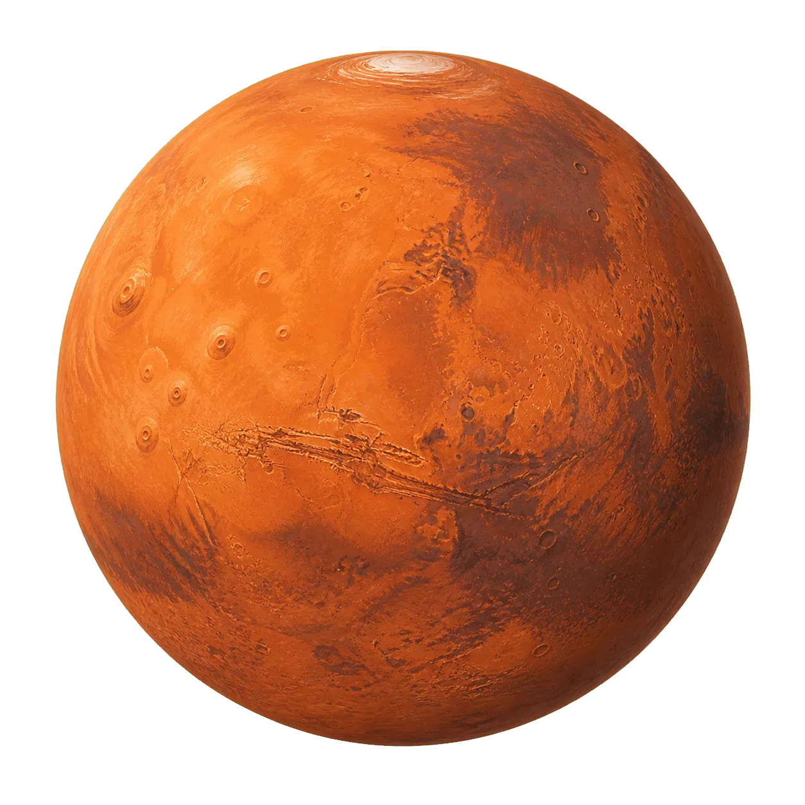
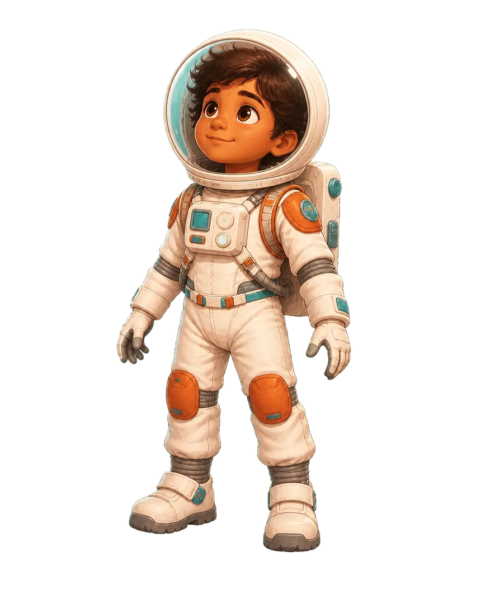
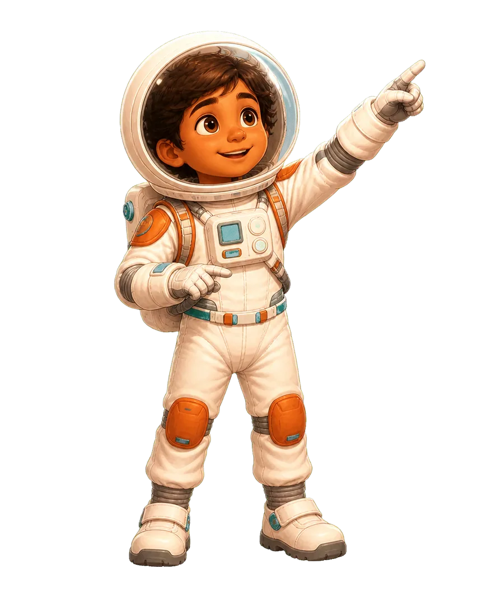
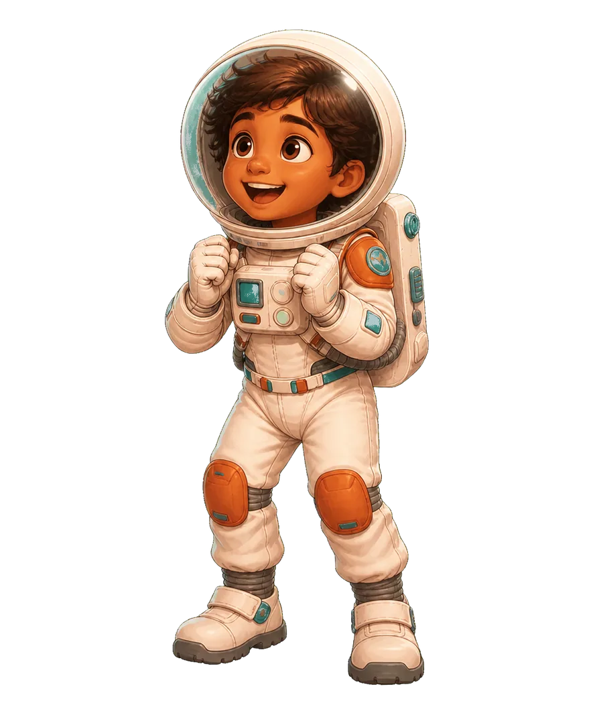
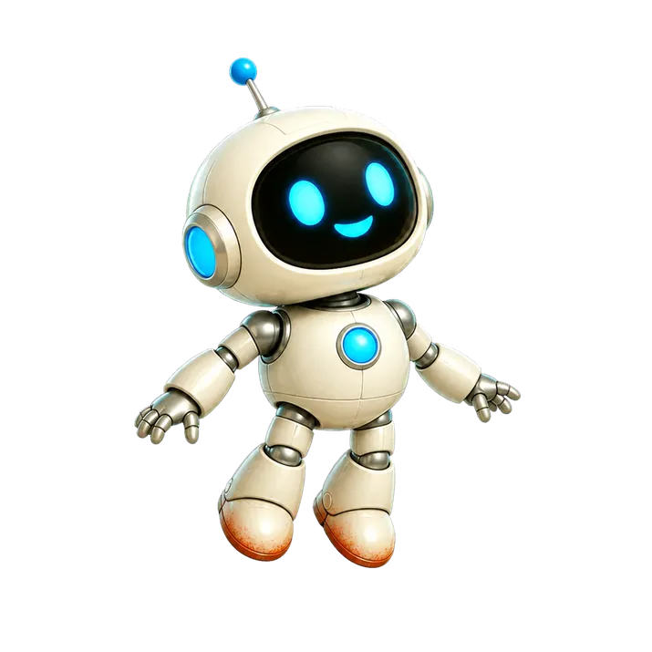
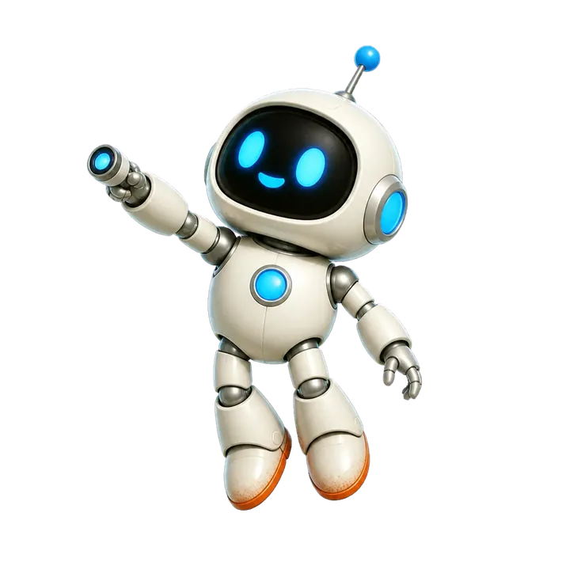
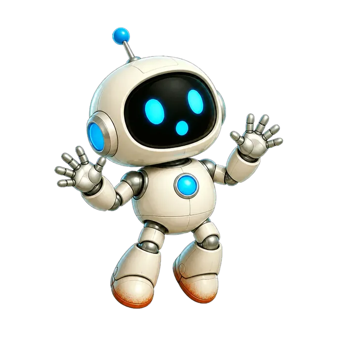
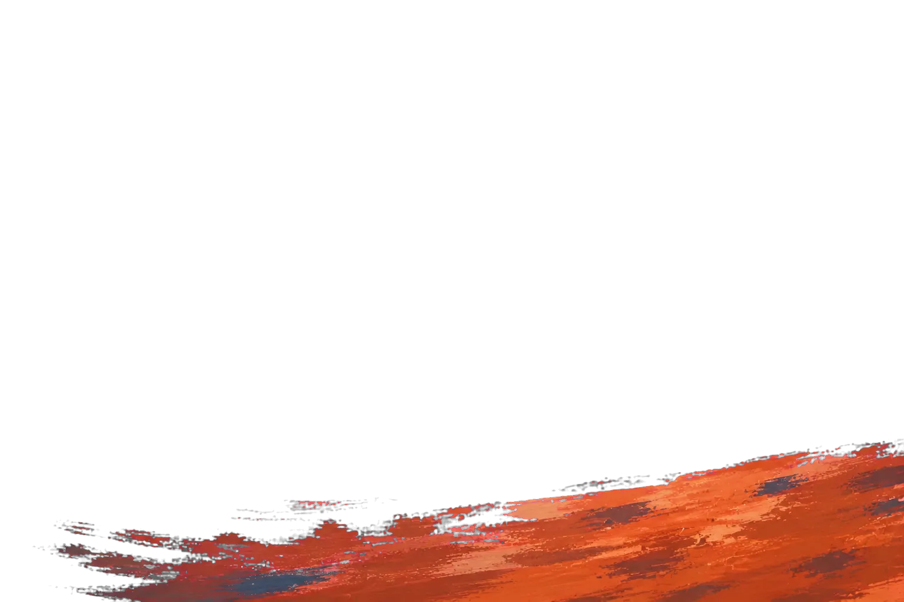
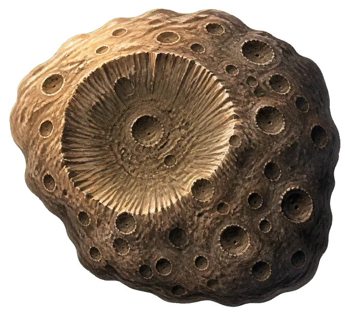
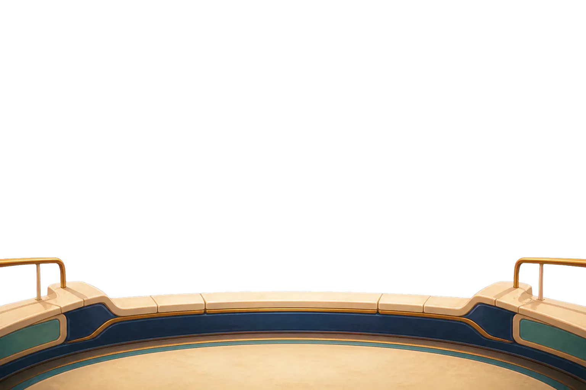
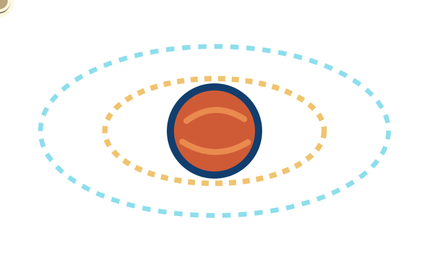
Simplified paths — sizes and distances are not to scale